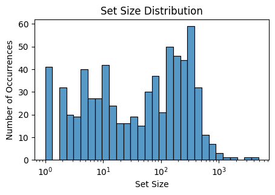
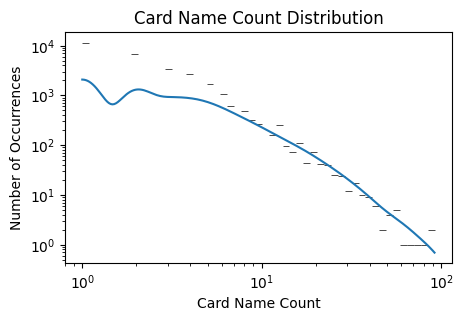
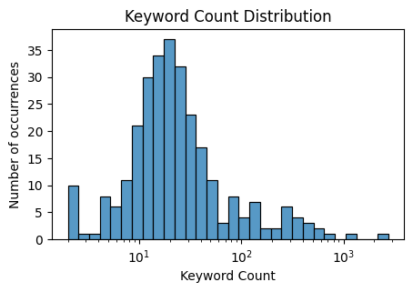
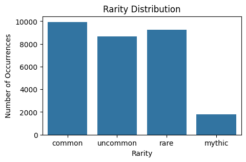
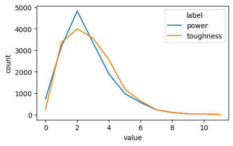
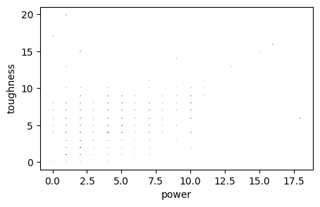

Loaded DF of shape: (96296, 78)
Columns: Index(['artist', 'artistIds', 'asciiName', 'attractionLights', 'availability',
'boosterTypes', 'borderColor', 'cardParts', 'colorIdentity',
'colorIndicator', 'colors', 'defense', 'duelDeck', 'edhrecRank',
'edhrecSaltiness', 'faceConvertedManaCost', 'faceFlavorName',
'faceManaValue', 'faceName', 'finishes', 'flavorName', 'flavorText',
'frameEffects', 'frameVersion', 'hand', 'hasAlternativeDeckLimit',
'hasContentWarning', 'hasFoil', 'hasNonFoil', 'isAlternative',
'isFullArt', 'isFunny', 'isOnlineOnly', 'isOversized', 'isPromo',
'isRebalanced', 'isReprint', 'isReserved', 'isStarter',
'isStorySpotlight', 'isTextless', 'isTimeshifted', 'keywords',
'language', 'layout', 'leadershipSkills', 'life', 'loyalty', 'manaCost',
'manaValue', 'name', 'number', 'originalPrintings',
'originalReleaseDate', 'originalText', 'originalType', 'otherFaceIds',
'power', 'printings', 'promoTypes', 'rarity', 'rebalancedPrintings',
'relatedCards', 'securityStamp', 'setCode', 'side', 'signature',
'sourceProducts', 'subsets', 'subtypes', 'supertypes', 'text',
'toughness', 'type', 'types', 'uuid', 'variations', 'watermark'],
dtype='object')Summary
Exploratory data analysis of basic card features (e.g. power and toughness)
1 Explore Card Table
Time to load up the card data (cards.parquet) and take a look at the columns and data types. We will explore the various data columns.
The file has 96,216 records of cards, with each having 78 data fields.
1.1 Exploring Data Features
Here I’ll explore the various data feature is the card data.
1.1.1 Identifier Features
uuid:- Also see the
cardIdentifiers.parquetfile
1.1.2 Name Features
asciiName: Name with only legal ASCII characters. Only populated if non-ASCII characters innameflavorName: Promotion name, with true name underneath, such as Cabal Coffers with the flavor name: Minas Morgulname: Name of the cards. Multi-faced cards include a//delimiter.number: Card number in the setsetCode: The set code a card is in- Also see the
sets.parquetfile for set data.
1.1.2.1 ASCII Name
Look at the name and asciiName columns to see if there are any differences.
| asciiName | name | |
|---|---|---|
| 41669 | Nazgul | Nazgûl |
1.1.2.2 Set Code
Here is the sets with the top 10 highest counts of uuids.
setCode
PLST 4853
PRM 3200
SLD 1612
WHO 1186
PIP 1076
CMM 1068
CLB 972
LTR 856
J22 835
PSAL 725
Name: count, dtype: int64A histogram of the set card counts. It is bimodal with a peak around 200 cards, and a peak around 10 cards.

1.1.2.3 Card Name
See how many occurrences of each name there are in the data set.
The five basic lands show up very frequently.
name
Forest 872
Swamp 845
Island 835
Mountain 833
Plains 810
Name: count, dtype: int64Here are the next 10 frequent cards, including Sol Ring and Swords to Plowshares
name
Sol Ring 92
Swords to Plowshares 85
Command Tower 78
Counterspell 71
Evolving Wilds 68
Serra Angel 60
Terramorphic Expanse 59
Lightning Bolt 58
Arcane Signet 58
Giant Growth 57
Disenchant 56
Name: count, dtype: int64Plotting out the histogram of card name frequency, we can see it follows the power-law. It is nearly linear on a log-log scale.

1.1.3 Primary Play Features
keywords: A list of keywords on the cardpower: The power of a creature cardrarity: The rarity of the cardtoughness: The toughness of a creature card
1.1.3.1 Keywords
Get count of all keywords in the data. There are 588 unique keywords. We can see flying takes the lead, with enchant and trample also being popular.
We’ll adjust the data to only look at one of each unique name and removing alterative art cards.
Total Unique Keywords: 586
Keywords w/ >250 Counts: 18
Keywords w/ <10 Count: 349keywords
Flying 2746
Enchant 1175
Trample 816
Haste 566
Vigilance 544
Equip 494
Flash 493
Mill 469
Scry 396
First strike 349
Name: count, dtype: int64Here we see that most keywords are infrequent, with only 18 keywords appearing more than 250 times.

1.1.3.2 Rarity
We can see that for uuids, the rare is the most common type.
rarity
rare 35408
common 28389
uncommon 23844
mythic 8179
special 387
bonus 9
Name: count, dtype: int64We clean this up by only selecting one instance of each name, and removing alterative art cards.
The number of cards per rarity is fairly uniform except for mythic which is much lower. Note that this is the number of uniquely named cards, not print frequency.
rarity
common 9941
rare 9256
uncommon 8657
mythic 1788
special 9
Name: count, dtype: int64
1.1.3.3 Power & Toughness
<Axes: xlabel='value', ylabel='count'>
name
"Ach! Hans, Run!" None
"Brims" Barone, Midway Mobster 5
"Lifetime" Pass Holder 2
"Name Sticker" Goblin 2
"Rumors of My Death . . ." None
...
Éomer, King of Rohan 2
Éomer, Marshal of Rohan 4
Éowyn, Fearless Knight 3
Éowyn, Lady of Rohan 2
Éowyn, Shieldmaiden 5
Name: power, Length: 29651, dtype: object<Axes: xlabel='power', ylabel='toughness'>
1.1.4 Color & Mana Features
colorIdentitycolorIndicatorcolorsmanaCostmanaValue
1.1.5 Card Type Features
subsetssubtypessupertypestypetypes
1.1.6 Text Features
flavorText:hasContentWarning: Cards that have sensitive content. See this article for more.language: The language the text is written in.isFunny: Is a funny card, like in ‘Un-sets’isStorySpotlight: A Story Spotlight card. Marked as “Story Spotlight” with sequence number in lower border.isTextless: The card does not have a textboxtext: The rules text in the textbox.- Also see the
cardRulings.parquetfile for ruling text - Also see the
cardForeignData.parquetfile foreign language translations
1.1.7 Special Play Features
attractionLights: List of attraction lights found on cards, such as Unfinity attraction ride cardsdefense: Used byBattle - Siegetype cards, such asInvasion of Gobakhan // Lightshield Arrayhand: Adjusts starting hand value. Used byVanguardtype cards.hasAlternativeDeckLimit: Allows for more than 4 copies in a deckleadershipSkills: Legality of a card to be a commander in various formatsloyalty: Used by planeswalkerslife: Adjusts starting life value. Used byVanguardtype cards.relatedCards: A list of card names associated to a card, such asSword of Dungeons & DragonsandDragon
1.1.8 Card Layout Variant Features
cardParts: List of multiple card parts for meld layouts, such asBrisela, Voice of Nightmares+Bruna, the Fading Light // Brisela, Voice of NightmaresfaceConvertedManaCostfaceFlavorNamefaceManaValuefaceNamelayout: Non-standard card layouts, such as split, flip, or transformotherFaceIds:uuidof other faces of the card, such as double-faced cards.side: Identifier on side of card for given face, such asaorb
1.1.9 Performance Features
edhrecRankedhrecSaltiness
1.1.10 Legal Features
- Also see the
cardLegalities.parquetfile for format legalities
1.1.11 Visual & Collector Features
artistartistIdsborderColor: Boarder color of card, such as black, white, or silverfinishes: Card finish, such as foil, non-foil, or etchedframeEffects: Non-standard effects, such as etched or extended artframeVersion: Version of frame such as 1993 or 2015hasFoilhasNonFoilisAlternativeisFullArtisOversizedisTimeshifted: Timeshifted is a current card with a retro frame.signaturevariations:uuids of other cards that are alternate printings of the card in the same set.watermark: Name of watermark on the card
1.1.12 Printing Features
availability: A lest of card’s available printing types, such as paper, arena, etc.isOnlineOnlyisPromoisRebalancedisReprintisReservedprintingspromoTypesrebalancedPrintingssecurityStamp: Security stamp, such as acorn, heart, etc.
1.1.13 Original Printing Features
originalPrintings:uuids of original printings if its different than the original, such as rebalanced cards.originalReleaseDate: If release date was different than the set release date.originalTextoriginalType
1.1.14 Products Features
boosterTypes: List of booster types. Default is a random booster, versus deck boosters which are deterministic.duelDeck: Indicates which deck (‘a’ vs ‘b’) a card is in Dual DecksisStarter: Is card in a starter deck product.sourceProducts:uuids of associated sealed products where card can be found.- Also see the
cardPrices.parquetfile for card prices. - Also see the
cardPurchaseUrls.parquetfile for card purchase URLs. - Also see the
setBoosterContents.parquetand related files for booster pack data.
--------------------------------------------------------------------------- KeyError Traceback (most recent call last) Cell In[10], line 3 1 mask = df['name'] == 'Boom // Bust' 2 mask &= df['uuid'] == '7104f01e-0ca6-53e6-873f-ee246015174a' ----> 3 df.loc[mask, ['faceName', 'name', 'language', 'multiverseId', 'identifiers', 'uuid']].head() File c:\Users\Josh.Meehl\AppData\Local\Programs\Python\Python310\lib\site-packages\pandas\core\indexing.py:1147, in _LocationIndexer.__getitem__(self, key) 1145 if self._is_scalar_access(key): 1146 return self.obj._get_value(*key, takeable=self._takeable) -> 1147 return self._getitem_tuple(key) 1148 else: 1149 # we by definition only have the 0th axis 1150 axis = self.axis or 0 File c:\Users\Josh.Meehl\AppData\Local\Programs\Python\Python310\lib\site-packages\pandas\core\indexing.py:1339, in _LocIndexer._getitem_tuple(self, tup) 1336 if self._multi_take_opportunity(tup): 1337 return self._multi_take(tup) -> 1339 return self._getitem_tuple_same_dim(tup) File c:\Users\Josh.Meehl\AppData\Local\Programs\Python\Python310\lib\site-packages\pandas\core\indexing.py:994, in _LocationIndexer._getitem_tuple_same_dim(self, tup) 991 if com.is_null_slice(key): 992 continue --> 994 retval = getattr(retval, self.name)._getitem_axis(key, axis=i) 995 # We should never have retval.ndim < self.ndim, as that should 996 # be handled by the _getitem_lowerdim call above. 997 assert retval.ndim == self.ndim File c:\Users\Josh.Meehl\AppData\Local\Programs\Python\Python310\lib\site-packages\pandas\core\indexing.py:1382, in _LocIndexer._getitem_axis(self, key, axis) 1379 if hasattr(key, "ndim") and key.ndim > 1: 1380 raise ValueError("Cannot index with multidimensional key") -> 1382 return self._getitem_iterable(key, axis=axis) 1384 # nested tuple slicing 1385 if is_nested_tuple(key, labels): File c:\Users\Josh.Meehl\AppData\Local\Programs\Python\Python310\lib\site-packages\pandas\core\indexing.py:1322, in _LocIndexer._getitem_iterable(self, key, axis) 1319 self._validate_key(key, axis) 1321 # A collection of keys -> 1322 keyarr, indexer = self._get_listlike_indexer(key, axis) 1323 return self.obj._reindex_with_indexers( 1324 {axis: [keyarr, indexer]}, copy=True, allow_dups=True 1325 ) File c:\Users\Josh.Meehl\AppData\Local\Programs\Python\Python310\lib\site-packages\pandas\core\indexing.py:1520, in _LocIndexer._get_listlike_indexer(self, key, axis) 1517 ax = self.obj._get_axis(axis) 1518 axis_name = self.obj._get_axis_name(axis) -> 1520 keyarr, indexer = ax._get_indexer_strict(key, axis_name) 1522 return keyarr, indexer File c:\Users\Josh.Meehl\AppData\Local\Programs\Python\Python310\lib\site-packages\pandas\core\indexes\base.py:6114, in Index._get_indexer_strict(self, key, axis_name) 6111 else: 6112 keyarr, indexer, new_indexer = self._reindex_non_unique(keyarr) -> 6114 self._raise_if_missing(keyarr, indexer, axis_name) 6116 keyarr = self.take(indexer) 6117 if isinstance(key, Index): 6118 # GH 42790 - Preserve name from an Index File c:\Users\Josh.Meehl\AppData\Local\Programs\Python\Python310\lib\site-packages\pandas\core\indexes\base.py:6178, in Index._raise_if_missing(self, key, indexer, axis_name) 6175 raise KeyError(f"None of [{key}] are in the [{axis_name}]") 6177 not_found = list(ensure_index(key)[missing_mask.nonzero()[0]].unique()) -> 6178 raise KeyError(f"{not_found} not in index") KeyError: "['multiverseId', 'identifiers'] not in index"
Here we can see that each printing of the Boom // Bust card has a common multiverseId and unique uuid across the Boom and Bust faces.
| faceName | name | language | multiverseId | identifiers | uuid | |
|---|---|---|---|---|---|---|
| 285143 | Boom | Boom // Bust | German | 140480.0 | {"multiverseId": 140480, "scryfallId": "303895... | 7104f01e-0ca6-53e6-873f-ee246015174a |
| 285151 | Bust | Boom // Bust | German | 140480.0 | {"multiverseId": 140480, "scryfallId": "303895... | 94a1683f-deed-5731-bc0a-894075b3fdb2 |
Most cards are printed in 10 languages beyond english.
count
10 13194
6 9757
7 8048
8 5111
5 4187
4 3679
9 3237
3 3082
1 3009
2 2629
Name: count, dtype: int64It appears that Phyrexian is not compatible with the UTF-8 character encoding!
116703 |zvEZYCsDFhg.\n|besYf,GvEng,mpreLYv co,LFr2aho...
116704 |pcEnusL.\n+Ⅰ: |co,tuhtZFsDYt,DEEtAGvEnyg,hruP...
157935 |zvEpnrYhm.\n|su,Lecc,CF,CsYPYcs,usFPuuDs²\\²M...
162944 None
169505 |zvEhiUIpenDk zvE&EhclYvh.\n|beCEcs,FgCnUCA Fg...
Name: text, dtype: object1.2 Identifiers
The cardIdentifiers.parquet file contains the Identifiers. These are used to map the MTGJSON card to other platforms, such as TCG Player or MTG Arena.
The other platforms are:
- Card Kingdom: A large-scale card vender - Card Sphere: A card trading marketplace - Cardmarket: A card marketplace - MTG Arena: An online environment to play MTG - MTG Online: An online environment to play MTG - WOTC Gather: WOTC’s official data source. - Scryfall: Another MTG data source. Note DFC do not have unique UUIDs. - TGC Player: A card marketplace
A note on the uuids. The foil and non-foil versions of a card have unique uuids. To cross-reference the other foil type, use the mtgjsonFoilVersionId and mtgjsonNonFoilVersionId fields.
Opening cardIdentifiers.parquet
Loaded DF of shape: (96203, 21)cardKingdomEtchedId None
cardKingdomFoilId None
cardKingdomId 122720
cardsphereFoilId 21
cardsphereId 22
mcmId 16166
mcmMetaId 176
mtgArenaId None
mtgjsonFoilVersionId 8fd4e2eb-3eb4-50ea-856b-ef638fa47f8a
mtgjsonNonFoilVersionId None
mtgjsonV4Id 9eb2e54c-a12b-5e88-a9c0-d8c84c52d59c
mtgoFoilId 26993
mtgoId 26992
multiverseId 129465
scryfallCardBackId 0aeebaf5-8c7d-4636-9e82-8c27447861f7
scryfallId 8f7980d4-da43-4d6d-ad16-14b8a34ae91d
scryfallIllustrationId e4d6c53f-e936-4be8-8b70-47c2be863b20
scryfallOracleId a2daaf32-dbfe-4618-892e-0da24f63a44a
tcgplayerEtchedProductId None
tcgplayerProductId 15033
uuid 57aaebc1-850c-503d-9f6e-bb8d00d8bf7c
Name: 2, dtype: object| mtgjsonFoilVersionId | mtgjsonNonFoilVersionId | uuid | |
|---|---|---|---|
| 2 | 8fd4e2eb-3eb4-50ea-856b-ef638fa47f8a | None | 57aaebc1-850c-503d-9f6e-bb8d00d8bf7c |
| 3 | None | 57aaebc1-850c-503d-9f6e-bb8d00d8bf7c | 8fd4e2eb-3eb4-50ea-856b-ef638fa47f8a |
1.3 Boosters
df = load_by_filename(“setBoosterContents.parquet”) mask = df[‘setCode’] == ‘OTJ’ mask &= df[‘boosterName’] == ‘play’ mask &= df[‘sheetName’] == ‘breakingNews’ df.loc[mask].head(50)
df = load_by_filename(“setBoosterContentWeights.parquet”) mask = df[‘setCode’] == ‘OTJ’ mask &= df[‘boosterName’] == ‘play’ df.loc[mask].head(50)
df = load_by_filename(“setBoosterSheets.parquet”) mask = df[‘setCode’] == ‘OTJ’ mask &= df[‘boosterName’] == ‘collector’ df.loc[mask].head(50)
df = load_by_filename(“setBoosterSheetCards.parquet”) mask = df[‘setCode’] == ‘OTJ’ mask &= df[‘boosterName’] == ‘play’ mask &= df[‘sheetName’] == ‘breakingNews’ df.loc[mask].head(50)